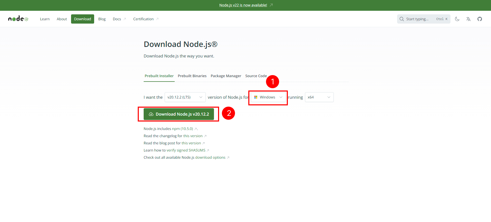
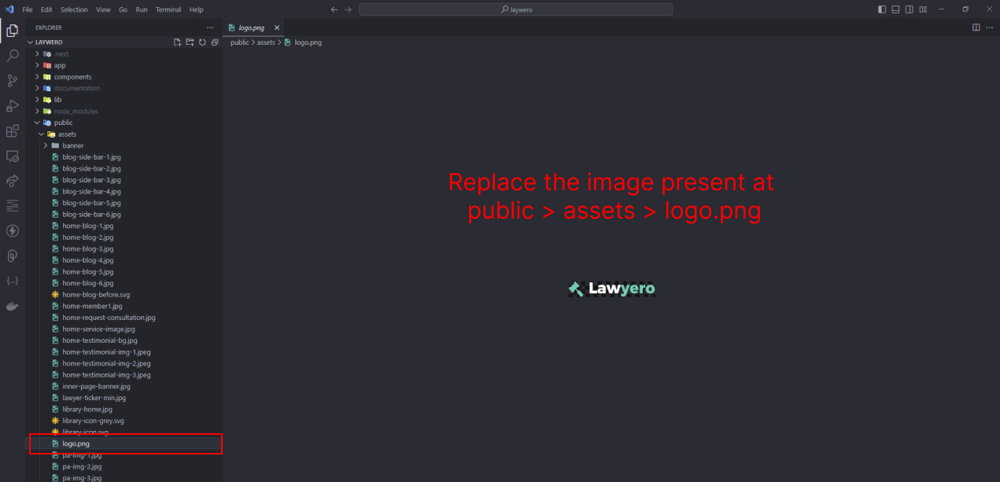
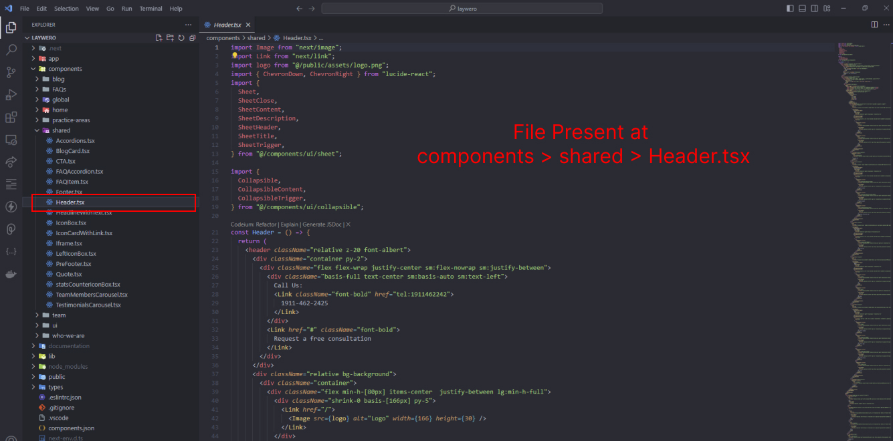
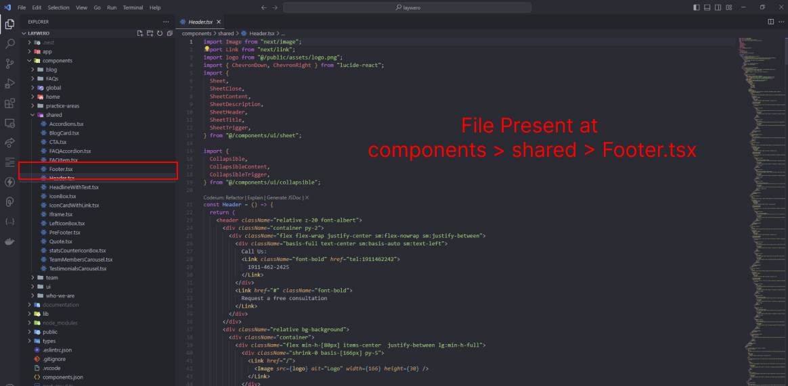
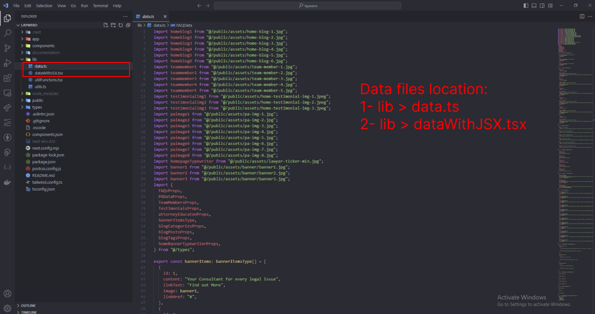
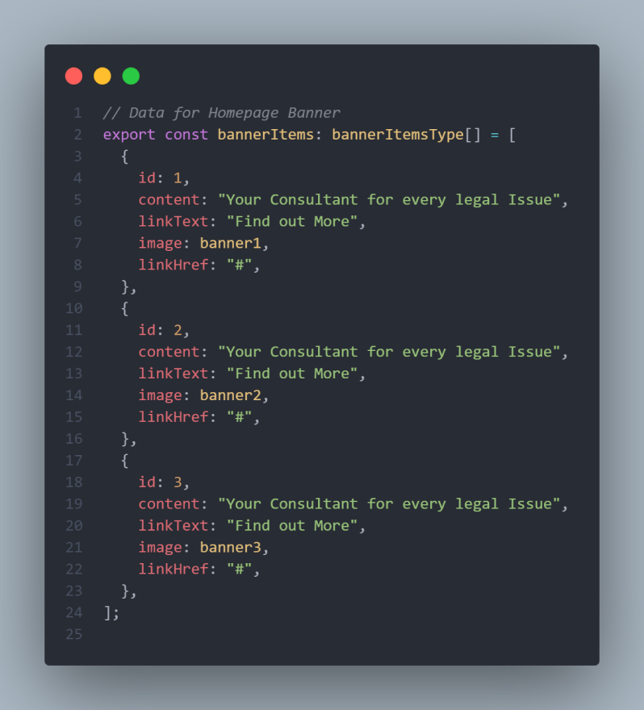

Introduction
Welcome to "Lawyero" - the Next.js app designed specifically for lawyers and legal professionals. This documentation serves as a guide to help you maximize the potential of lawyero in your legal practice.
This documentation aims to provide comprehensive instructions on installation, configuration, usage, customization, deployment, security, and more, ensuring a seamless experience for lawyers using the app.
Getting Started
System Requirements
Before installing and using lawyero, ensure that your system meets the following minimum requirements:
- Node.js: Ensure that you have Node.js installed on your system. Node.js is a JavaScript runtime required to run Next.js applications like lawyero. You can download and install Node.js from the official website:

- Select Your Operating System
- Download and install
NPM: NPM (Node Package Manager) comes bundled with Node.js. It is used to install dependencies and manage project dependencies efficiently.
What's Included
After purchasing lawyero template, go to your Download page and download the Lawyero template files from your downloads page. The Lawyero package includes the following:
- lawyero.zip
- documentation
Installation
Follow these step-by-step instructions to install and set up lawyero on your local computer using Visual Studio Code (VS Code):
- Download the lawyero code package from the marketplace where you obtained it.
- Extract the downloaded package to a location on your computer.
- Open Visual Studio Code (VS Code).
- In VS Code, go to File > Open Folder, and select the directory where you extracted the lawyero code package.
- Once the project is open in VS Code, open a new terminal within VS Code by selecting Terminal > New Terminal.
- In the terminal, navigate to the project directory if you're not already there, using the
cd command. For example:
cd path/to/lawyero
- Next, run the following command to install the project dependencies using npm:
npm install
This command will install all the necessary packages and dependencies required by the lawyero app.
- Once the installation is complete, you can start the development server by running the following command:
npm run dev
This command will start the Next.js development server, allowing you to view the lawyero app in your web browser.
- Open your web browser and navigate to the specified address (usually http://localhost:3000/) to access the lawyero app.
Congratulations! You have successfully installed and set up the lawyero app on your local computer. You can now use Visual Studio Code to work on and customize the app according to your needs.
Global Options
Update Logo
This section will take you through on how to change the logo. To change your site logo use the instructions in the following screenshot.

Customize Site Header
Use the following screenshot to customize the site header. The screenshot includes the location of the header file that you can make changes to customize the site header.

Customize Site Footer
Use the following screenshot to customize the site footer. The screenshot includes the location of the footer file that you can make changes to customize the site footer.

Customizing Individual Pages Content
Lawyero makes it easy to customize the content of individual pages. All of the content is stored in 2 data files. The location of the data files can be seen in the following screenshot:

Change Homepage Banner Content
All of the content includes the comments making it easy to find and change the content. Following is an example of how to make changes to the Homepage Banner.

- Navigate to lib > data.ts file.
- Scroll to the section that starts with "// Data for Homepage Banner".
- Make changes to the content.
- Save the file.
- Refresh the browser.
- Done!
You can use the same approach to make the changes to the other pages.
FAQs
Q. I have found a bug. What should i do?
If you find a bug please report the bug and we will get it fixed for you as soon as possible.
Q. Are you available for helping to setup the Theme?
Yes. If you need the template customization or custom development.
Q. I bought theme by mistake or other. Is refunds available?
Only in rare cases according to the policy stated.
Q. Are you available for Freelancing Work?
Yes we are available @ $50/hr.
Sources & Credits
- NodeJS
- NextJS 14
- GSAP
- Tailwind CSS
- ShadCN UI
- Unsplash